사회조사분석사-2급 (2021-08-14 기출문제)
1과목: 조사방법론 I
1. 횡단연구(cross-sectional study)에 관한 설명으로 틀린 것은?
- 추세연구는 횡단연구의 일종이다.
- 인구센서스 조사는 횡단연구의 대표적인 예이다.
- 어느 한 시점에서 어떤 현상을 주의 깊게 연구하는 방법이다.
- 횡단연구로 인과적 관계를 규명하려는 가설검증이 가능하다.
(정답률: 63%)

2. 탐색적 조사의 유형(방법)에 해당하지 않는 것은?
- 문헌조사
- 인과조사
- 사례조사
- 경험자·전문가 의견조사
(정답률: 75%)
3. 소시오메트리(sociometry)에 관한 설명으로 틀린 것은?
- 델파이 조사방법을 준용한다.
- 네트워크 분석과 관련이 있다.
- 사람들의 대인관계에 관한 조사연구방법이다.
- 주관적 경험을 통한 현상학적 접근으로 집단의 구조를 이해하려 한다.
(정답률: 54%)
4. 다음은 솔로몬 연구설계에 관한 설명으로 맞는 것을 모두 고른 것은?
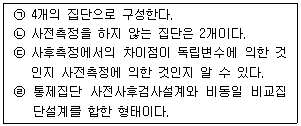
- ㉠, ㉢
- ㉠, ㉡, ㉢
- ㉡, ㉣
- ㉠, ㉡, ㉢, ㉣
(정답률: 50%)
5. 인과관계의 일반적인 성립조건과 가장 거리가 먼 것은?
- 공변관계(covariation)
- 연속변수(continuous variable)
- 시간적 선행성(temporal precedence)
- 비허위적 관계(lack of spuriousness)
(정답률: 61%)
6. 개인수준의 분석단위에서 도출된 결과를 집단수준으로 확대 해석할 때 나타날 수 있는 오류는?
- 분석오류
- 생태학적 오류
- 집단주의적 오류
- 개인주의적 오류
(정답률: 74%)
7. 자신의 신분을 밝히지 않은 채 자연스럽게 일어나는 사회적 과정에 참여하는 관찰자의 역할은?
- 완전관찰자
- 참여자적 관찰자
- 완전참여자
- 관찰자적 참여자
(정답률: 57%)
8. 단일사례연구에 관한 설명으로 틀린 것은?
- 비반응성 연구의 한 유형이다.
- 기초선으로 성숙효과를 통제할 수 있다.
- 단일사례로서 개인, 가족, 단체 등이 분석대상이다.
- 여러 명의 조사대상들에게 개입시기를 다르게 하면 우연한 사건효과를 통제할 수 있다.
(정답률: 30%)
9. 다음 중 가설로서 가장 적합한 형태의 진술은?
- 철수는 지금 서울에 있다.
- 철수는 지금 서울에 있으면서 부산에 있다.
- 철수는 지금 서울에 있으면서 동시에 서울에 있지 않다.
- 철수는 지금 서울에 있거나 그렇지 않으면 서울에 있지 않다.
(정답률: 70%)
10. 과학적 지식에 가장 가까운 것은?
- 절대적 진리
- 전통에 의한 지식
- 개연성이 높은 지식
- 전문가가 설명한 지식
(정답률: 70%)
11. 질적 방법으로 수집된 자료에 관한 설명으로 틀린 것은?
- 현장중심의 사고를 할 수 있다.
- 자료의 표준화를 도모하기 쉽다.
- 유용한 정보의 유실을 줄일 수 있다.
- 정보의 심층적 의미를 파악할 수 있다.
(정답률: 79%)
12. 연구의 목적과 사례의 연결이 잘못된 것은?
- 기술(description)-유권자들의 대선후보 지지율 조사
- 설명(explanation)-시민들의 왜 담배값 인상에 반대하는지 파악하고자 하는 연구
- 평가(evaluation)-현재의 공공의료정책이 1인당 국민 의료비를 증가시켰는지에 대한 연구
- 탐색(exploration)-단일사례설계를 통하여 운동이 체중 감소에 미치는 효과를 검증하는 연구
(정답률: 58%)
13. 2차 자료 분석의 특징과 가장 거리가 먼 것은?
- 자료의 결측값을 추적할 수 있다.
- 자료를 직접 수집하지 않아도 된다.
- 기존 데이터를 수정·편집해 분석할 수 있다.
- 비교적 적은 비용으로 대규모사례 분석이 가능하다.
(정답률: 66%)
14. 내용분석에 관한 설명으로 틀린 것은?
- 비개입적 연구이다.
- 표본추출은 하지 않는다.
- 코딩을 위해서는 개념화 및 조작화가 이루어져야 한다.
- 서적을 내용분석할 때 분석단위는 페이지, 단락, 줄 등이 가능하다.
(정답률: 63%)
15. 회수된 질문지를 실제 분석에 사용할 것인지 판단할 필요가 있다. 다음의 질문지 중에서 분석에 포함시켜도 되는 질문지는?
- 질문지의 일부가 분실된 질문지
- 조사일정을 지나서 조사된 질문지
- 조사지역을 벗어나서 조사된 질문지
- 소수 항목에 대해 응답을 하지 않은 질문지
(정답률: 75%)
16. 기술조사에 적합한 조사주제를 모두 고른 것은?
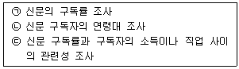
- ㉠, ㉡
- ㉡, ㉢
- ㉠, ㉢
- ㉠, ㉡, ㉢
(정답률: 53%)
17. 과학적 연구방법의 특징이 아닌 것은?
- 논리성
- 인과성
- 주관성
- 경험적 검증 가능성
(정답률: 83%)
18. 실험설계에 대한 설명으로 틀린 것은?
- 실험의 내적 타당도를 확보하기 위한 노력이다.
- 실험의 검증력을 극대화 시키고자 하는 시도이다.
- 연구가설의 진위여부를 확인하는 구조화된 절차이다.
- 조작적 상황을 최대한 배제하고 자연적 상황을 유지해야하는 표준화된 절차이다.
(정답률: 79%)
19. 시간의 변화에 따른 특정 하위모집단의 변화를 관찰하는 연구는?
- 횡단연구
- 추이연구
- 패널연구
- 코호트연구
(정답률: 45%)
20. 프로빙(probing)에 대한 설명으로 틀린 것은?
- 정확한 답을 얻기 위해 방향을 지시하는 기법이다.
- 답변의 정확도를 판단하는 방법으로 활용되기도 한다.
- 개방형 질문에 대한 답을 비교하는 절차로서 활용된다.
- 일종의 폐쇄식 질문에 답을 하고 이에 관련된 의문을 탐색하는 보조방법이다.
(정답률: 45%)
21. 어떤 대학의 학생생활지도연구소에서는 해마다 신입생에 대한 인성검사를 실시하고 있다. 이 경우 시간과 비용면에서 효율적으로 조사를 하는데 가장 적합하다고 생각되는 조사양식은?
- 우편조사
- 대면적인 면접조사
- 자기기입식 집단설문조사
- 개별적으로 접근되는 질문지 조사
(정답률: 74%)
22. 질문지에 사용되는 질문이나 진술을 작성하는 원칙과 가장 거리가 먼 것은?
- 항목들이 명확해야 한다.
- 질문항목들은 되도록 짧아야 한다.
- 편견에 치우친 항목과 용어를 지양한다.
- 부정어가 포함된 질문을 반드시 포함한다.
(정답률: 82%)
23. 가설에 관한 설명으로 틀린 것은?
- ‘모든 사람은 죽는다.’는 좋은 가설의 예라고 할 수 있다.
- 가설은 방향성을 가질 수도 있고 그렇지 않을 수도 있다.
- 가설은 서로 다른 두 개념이나 변수의 관계를 표시한다.
- 가설은 아직까지 진실 여부가 확인되지 않은 사실에 대한 진술문이라고 할 수 있다.
(정답률: 55%)
24. 다음 사례에 내재된 연구설계의 타당성 저해요인이 아닌 것은?
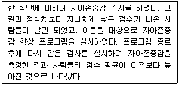
- 시험효과(testing effect)
- 도구효과(instrumentation)
- 성숙효과(maturation effect)
- 통계적 회귀(statistical regression)
(정답률: 46%)
25. 면접조사 시 질문의 일반적인 원칙과 가장 거리가 먼 것은?
- 문항은 하나도 빠짐없이 물어야 한다.
- 질문지에 있는 말 그대로 질문해야 한다.
- 조사대상자가 대답을 잘 하지 못할 경우 필요한 대답을 유도할 수 있다.
- 조사대상자가 가능한 비공식적인 분위기에서 편안한 자세로 대답할 수 있어야 한다.
(정답률: 74%)
26. 연구에 사용할 가설이 좋은 가설인지 여부를 판단하기 위한 평가기준과 가장 거리가 먼 것은?
- 가설의 표현은 간단명료해야 한다.
- 가설은 계량화 할 수 있어야 한다.
- 가설은 경험적으로 검증할 수 있어야 한다.
- 동일 연구분야의 다른 가설이나 이론과 연관이 없어야 한다.
(정답률: 85%)
27. 관찰법의 장점과 가장 거리가 먼 것은?
- 조사자가 현장에서 즉시 포착할 수 있다.
- 관찰결과의 해석에 대한 객관성이 확보된다.
- 조사에 비협조적이거나 면접을 거부할 경우에 효과적이다.
- 행위나 감정을 언어로 표현하지 못하는 유아나 동물이 조사대상인 경우 유용하다.
(정답률: 80%)
28. 면접조사에서 응답내용의 신빙성을 저해하는 최근효과(recent effect)에 관한 설명으로 맞는 것은?
- 질문지(questionnaire)를 사용하는 사회조사 보다는 조사표(interview schedule)를 사용하는 면접조사에서 자주 발생한다.
- 무학이나 저학력 응답자들은 제일 먼저 들었던 응답내용을 그 다음에 들은 응답내용에 비해 훨씬 정확하게 기억하게 된다.
- 무학이나 저학력 응답자들은 면접 직전에 면접자로부터 접하게 된 면접자의 생각이나 조언을 거의 무비판적으로 따라서 응답하는 경향이 있다.
- 무학이나 저학력 응답자들은 아무리 최근에 입수한 정보나 직결된 내용일지라도 어려운 질문 내용은 잘 이해할 수 없어 조사의 실효성을 감소시킨다.
(정답률: 33%)
29. 조작적 정의에 관한 설명으로 틀린 것은?
- 개념을 측정 가능한 용어로 구체화한 것이다.
- 연구모형에 제시된 구성개념을 관찰 가능한 형태로 표현한 것이다.
- 조사에 사용되는 구성개념의 특징을 일반화시켜 추상적으로 표현한 것이다.
- 사회적응의 조작적 정의 중 하나는 사회적응의 수준을 측정하기 위해 개발된 척도가 될 수 있다.
(정답률: 75%)
30. 전화조사가 가장 적합한 경우는?
- 자세하고 심층적인 정보를 얻기 위한 조사
- 어떤 시점에서 순간적으로 무엇을 하며, 무슨 생각을 하는가를 알아내기 위한 조사
- 저렴한 가격으로 면접자 편의(bias)를 줄일 수 있으며 대답하는 요령도 동시에 자세히 알려줄 수 있는 조사
- 넓은 범위의 지리적인 영역을 조사대상 지역으로 하여 비교적 복잡한 정보를 얻으면서, 경비를 절약할 수 있는 조사
(정답률: 56%)
2과목: 조사방법론 II
31. 비확률표본추출방법에 관한 설명으로 틀린 것은?
- 표집오류를 확인하기 어렵다.
- 조사결과를 일반화하기 어렵다.
- 표본의 대표성을 확보하기 어렵다.
- 확률표본추출방법에 비해 시간과 비용이 많이 소요된다.
(정답률: 66%)
32. 리커트(Likert) 척도법에 대한 설명으로 적절하지 않은 것은?
- 각 문항에 대한 가중치를 다르게 부여할 수 없다는 단점이 있다.
- 척도검수에 대한 신뢰성을 검토하기 위해 반분법을 이용할 수 있다.
- 사용하기 쉽고, 직관적인 이해가 가능하기 때문에 사회조사에서 널리 사용된다.
- 척도가 단일 차원을 측정하고 있는가를 검토하기 위하여 인자분석(factor analysis)을 사용하기도 한다.
(정답률: 35%)
33. 층화표집의 단점이 아닌 것은?
- 집락이 모집단을 대표하지 못할 수가 있다.
- 표본추출과정에 비용이나 시간이 많이 든다.
- 표본추출이전에 모집단에 대한 지식이 필요하다.
- 발생률이 낮은 경우 표본을 찾아내기가 어려울 수 있다.
(정답률: 48%)
34. 불포함 오류에 관한 설명으로 맞는 것은?
- 표본조사를 할 때 표본체가 완전하게 되지 않아서 발생하는 오류이다.
- 표본추출과정에서 선정된 표본 중 일부가 연결이 되지 않거나 응답을 거부했을 때 생기는 오류이다.
- 면접이나 관찰과정에서 응답자나 조사자 자체의 특성에서 생기는 오류와 양자 간의 상호관계에서 생기는 오류이다.
- 정확한 응답이나 행동을 한 결과를 조사자가 잘못 기록하거나 기록된 설문지나 면접지가 분석을 위하여 처리되는 과정에서 틀려지는 오류이다.
(정답률: 42%)
35. 조작적 정의에 관한 설명으로 틀린 것은?
- 실제 측정의 전(前)단계이다.
- 관찰가능성 여부가 중요하다.
- 특정 개념은 한 가지의 조작적 정의를 갖는다.
- 추상적인 개념을 구체적인 경험세계와 연결시키는 과정이다.
(정답률: 65%)
36. 어떤 사회현상을 측정 했을 때의 설명으로 틀린 것은?
- 그 측정이 신뢰성도 타당성도 모두 없을 수 있다.
- 그 측정이 신뢰성과 타당성을 모두 다 가질 수 있다.
- 그 측정이 타당성은 있으나 신뢰성은 없을 수 있다.
- 그 측정이 신뢰성은 있으나 타당성은 없을 수 있다.
(정답률: 63%)
37. 신뢰도를 측정하는 방법으로 틀린 것은?
- 반분법
- 내용검사법
- 검사-재검사법
- 복수양식법
(정답률: 60%)
38. 다음은 어떤 변수에 대한 설명인가?
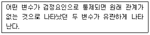
- 예측변수
- 억제변수
- 왜곡변수
- 종속변수
(정답률: 50%)
39. 용수철이 고장 난 체중계가 있어서 체중을 잴 때마다 항상 실제와 다르게 체중이 일정하게 나타난다면, 이 체중계의 타당도와 신뢰도는?
- 신뢰도와 타당도 모두 높다.
- 신뢰도와 타당도 모두 낮다.
- 신뢰도는 높고 타당도는 낮다.
- 신뢰도는 낮고 타당도는 높다.
(정답률: 68%)
40. 측정의 개념에 대한 맞는 설명을 모두 고른 것은?
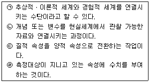
- ㉠, ㉡, ㉢
- ㉢, ㉣
- ㉠, ㉡, ㉣
- ㉠, ㉡, ㉢, ㉣
(정답률: 63%)
41. 보가더스(Bogardus)의 사회적 거리척도의 특징으로 틀린 것은?
- 적용 범위가 넓고 예비조사에 적합한 면이 있다.
- 집단 상호간이 거리를 측정하는 데 유용하다.
- 신뢰성 측정에는 양분법이나 복수양식법이 매우 효과적이다.
- 집단뿐 아니라 개인 또는 추상적인 가치에 관해서도 적용할 수 있다.
(정답률: 37%)
42. 표본의 크기에 관한 설명으로 틀린 것은?
- 허용오차가 클수록 표본의 크기가 커야 한다.
- 조사하고자 하는 변수의 분산값이 클수록 표본의 크기는 커야 한다.
- 추정치에 대한 높은 신뢰수준이 요구될수록 표본의 크기는 커야 한다.
- 비확률표본추출의 경우 표본의 크기는 예산과 시간을 고려하여 조사자가 결정할 수 있다.
(정답률: 50%)
43. 다음 사례의 표본추출방법은?
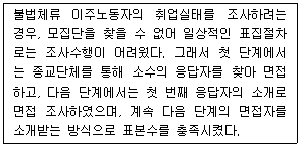
- 할당표집(quota sampling)
- 군집표집(cluster sampling)
- 눈덩이표집(snowball sampling)
- 편의표집(convenience sampling)
(정답률: 77%)
44. 측정의 수준에 관한 설명으로 틀린 것은?
- 비율측정은 절대영점이 존재한다.
- 등간측정은 측정단위 간 등간성이 유지된다.
- 서열측정과 등간측정은 등수, 서열관계를 알 수 있다.
- 등간측정은 측정치 간의 유의미한 비율계산이 가능하다.
(정답률: 64%)
45. 조작적 정의가 필요한 이유로 가장 적합한 것은?
- 연구결과를 조작하기 위해
- 이론의 구체성을 줄이기 위해
- 개념의 의미를 풍부하게 하기 위해
- 개념을 가시적이고 경험적으로 표현하기 위해
(정답률: 72%)
46. 우리나라 100대 기업의 연간 순수익을 ‘원(₩)’단위로 조사하고자 할 때 측정의 수준은?
- 비율측정
- 명목측정
- 서열측정
- 등간측정
(정답률: 62%)
47. 성인에 대한 우울증 검사도구를 청소년들에게 그대로 적용할 때 가장 우려되는 측정 오류는?
- 고정반응
- 무작위 오류
- 문화적 차이
- 사회적 바람직성
(정답률: 65%)
48. 측정도구의 타당도에 관한 설명으로 틀린 것은?
- 내용타당도(content validity)는 전문가의 판단에 기초한다.
- 구성타당도(construct validity)는 예측타당도(predictive validity)라 한다.
- 동시타당도(concurrent validity)는 신뢰할 수 있는 다른 측정도구와 비교하는 것이다.
- 기준관련 타당도(criterion-related validity)는 내용 타당도보다 경험적 검증이 용이하다.
(정답률: 48%)
49. 측정수준과 예가 잘못 짝지어진 것은?
- 명목측정: 성별, 인종
- 비율측정: 소득, 직업
- 등간측정: 온도, IQ지수
- 서열측정: 후보자 선호, 사회계층
(정답률: 69%)
50. 여성근로자를 대상으로 하는 사회조사에서 변수가 될 수 없는 것은?
- 성별
- 직업종류
- 연령
- 근무시간
(정답률: 76%)
51. 지수와 척도에 관한 설명으로 틀린 것은?
- 지수와 척도 모두 변수의 합성측정이다.
- 지수점수는 척도점수보다 더 많은 정보를 전달한다.
- 척도와 지수 모두 변수에 대한 서열측정이다.
- 척도는 동이한 변수의 속성들 가운데서 그 강도의 차이를 이용하여 구별되는 응답 유형을 밝혀낸다.
(정답률: 51%)
52. 구성타당도(construct validity)에 대한 설명으로 틀린 것은?
- 이론과 관련하여 측정도구의 타당도를 검증한다.
- 구성타당도를 측정할 수 있는 방법으로 요인분석 등이 있다.
- 측정값 자체보다 측정하고자 하는 속성에 초점을 맞춘 타당성이다.
- 측정도구의 측정치와 기준이 되는 측정도구의 측정치와의 상관관계를 나타낸다.
(정답률: 42%)
53. 표집오차(sampling error)에 관한 설명으로 틀린 것은?
- 단순무작위표본추출법에서 표집오차는 분산의 크기가 클수록 커진다.
- 단순무작위표본추출법에서 표집오차는 표본의 크기가 클수록 커진다.
- 전체 표본의 크기가 같다고 했을 때, 단순무작위표본 추출법에서보다 층화표본추출법에서 표집오차가 작게 나타난다.
- 전체 표본의 크기가 같다고 했을 때, 단순무작위표본 추출법에서보다 집락표본추출법에서 표집오차가 크게 나타난다.
(정답률: 52%)
54. 확률표집의 논리를 적용하면서, 필요에 따라 표집률을 달리하는 표집방법은?
- 층화표집
- 계통표집
- 집락표집
- 가중표집
(정답률: 50%)
55. 측정의 타당도에 관한 설명으로 틀린 것은?
- 내용타당도는 전문가의 견해를 통해 판단할 수 있다.
- 기준타당도는 수렴타당도, 판별타당도로 구분된다.
- 개념구성타당도는 이론적 틀 내에서 측정도구의 타당성을 경험적으로 검증한다.
- 동시타당도는 작성한 측정도구를 이미 존재하고 있는 신뢰할 만한 측정도구와 비교하여 검증한다.
(정답률: 43%)
56. 표본추출에 관한 설명으로 맞는 것은?
- 분석단위와 관찰단위는 항상 일치한다.
- 표본추출요소는 자료가 수집되는 대상의 단위이다.
- 표본추출단위는 표본이 실제 추출되는 연구대상 목록이다.
- 통계치는 모집단위의 특정변수가 갖고 있는 특성을 요약한 값이다.
(정답률: 30%)
57. 지수나 척도와 같이 합성 측정(composite measures)을 이용하는 이유로 가장 타당한 것은?
- 측정 오차를 줄일 수 있기 때문이다.
- 타당도 계수를 높일 수 있기 때문이다.
- 외적 타당도를 높일 수 있기 때문이다.
- 하나의 개념이 갖는 다양한 의미에 대하여 포괄적인 측정을 할 수 있기 때문이다.
(정답률: 52%)
58. 오스굿(Charles Osgood)에 의하여 개발되기 시작한 의미분화척도(意味分化尺度: Semantic Differential Scale)의 작성시 고려해야 하는 사항이 아닌 것은?
- 응답자의 평가
- 평가도구의 작성
- 매개변수의 도입
- 차원과 대극점(對極點)의 용어 선정
(정답률: 51%)
59. 통계적 추리와 관련된 분포 중 이론상으로만 존재하는 것은?
- 표본분포
- 모집단분포
- 표집분포
- 표집틀분포
(정답률: 25%)
60. 측정 오류(error of measurement)에 관한 설명으로 틀린 것은?
- 신뢰성은 체계적 오류(systematic error)와 관련된 개념이다.
- 체계적 오류(systematic error)는 오류가 일정하거나 한쪽으로 치우쳐 있다.
- 무작위 오류(random error)는 오류의 값이 다양하게 분산되어 있으며 상호 상쇄되는 경향도 있다.
- 무작위 오류(random error)는 측정대상, 측정과정, 측정수단, 측정자 등에 일관성 없이 영향을 미쳐 발생하는 오류이다.
(정답률: 54%)
3과목: 사회통계
61. 분산분석표가 다음과 같을 때 ( )안에 들어갈 값은?
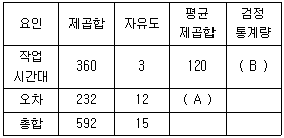
- A=19.3, B=1.55
- A=19.3, B=6.21
- A=30, B=0.25
- A=30, B=4
(정답률: 54%)
62. 기존의 취업 교육 프로그램을 이수한 사람의 취업률 p는 0.7이다. 새로운 교육 프로그램이 취업률을 높인다는 주장이 있어 통계적으로 검정하기 위해 사로운 교육 프로그램을 이수한 사람을 임의로 추출하여 취업률을 조사하였다. 이 때 적절한 귀무가설(H0)과 대립가설(H1)은?
- H0:p ＞0.7, H1:p=0.7
- H0:p≠0.7, H1:p=0.7
- H0:p=0.7, H1:p＞0.7
- H0:p=0.7, H1:p≠0.7
(정답률: 57%)
63. 표본의 크기가 n=10에서 n=160으로 증가한다면, 평균의 표준오차는 n=10에서 얻은 경우와 비교할 경우 값의 변화는?
- 1/4
- 1/2
- 2배
- 4배
(정답률: 45%)
64. 여론조사 기관에서 특정 프로그램의 시청률을 조사하기 위하여 100명의 시청자를 임의로 추출하여 시청여부를 물었더니 이 중 10명이 시청하였다. 이 때 이 프로그램의 시청률에 대한 95% 신뢰구간은? (단, 표준정규분포를 따르는 확률변수 Z는 P(Z＞1.96)=0.025를 만족한다.)
- (0.0312, 0.1688)
- (0.0412, 0.1588)
- (0.⑤12, 0.1488)
- (0.0612, 0.1388)
(정답률: 39%)
65. 한 학생이 경영학 과목에서 합격점수를 받을 확률은 2/3이고, 경영학과 통계학 두 과목에서 모두 합격점수를 받을 확률은 1/2이다. 만일 이 학생이 경영학 과목에 합격했음을 알고 있다면, 통계학 과목에서 합격점수를 받았을 확률은?
- 20%
- 25%
- 50%
- 75%
(정답률: 46%)
66. 앞면과 뒷면이 나올 확률이 동일한 동전을 10번 독립적으로 던질 때 앞면이 나오는 횟수를 X라고 하면 X의 기댓값과 분산은?
- E(X)=2.5, Var(X)=5
- E(X)=5, Var(X)=√5
- E(X)=5, Var(X)=√2.5
- E(X)=5, Var(X)=2.5
(정답률: 47%)
67. 변동계수(coefficient of variation)에 대한 설명으로 틀린 것은?
- 변동계수는 0이상, 1이하의 값을 갖는다.
- 변동계수는 단위에 의존하지 않는 통계량이다.
- 상대적인 산포의 측도로서 표준편차를 평균으로 나눈 값으로 정의된다.
- 단위가 서로 다르거나 집단 간에 평균의 차이가 큰 산포를 비교하는데 유용하게 사용된다.
(정답률: 37%)
68. 어떤 제품의 수명은 특정 부품의 수명과 밀접한 관계가 있다고 한다. 제품수명(Y)의 평균과 표준편차는 각각 13과 4이고, 부품수명(X)의 평균과 표준편차는 각각 12와 3이다. X와 Y의 상관계수가 0.6일 때, 추정희귀직선
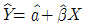
에서 기울기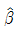
의 값은?- 0.6
- 0.7
- 0.8
- 0.9
(정답률: 34%)
69. 다음 통계량 중 그 성격이 다른 것은?
- 분산
- 최빈값
- 평균
- 중앙값
(정답률: 63%)
70. 어느 투자자의 연도별 수익률이 x1, x2, …, xn일 때, 연평균 수익률을 구하는 방법으로 가장 적절한 것은?
- 기하평균
- 산술평균
- 절사평균
- 조화평균
(정답률: 41%)
71. 다음의 내용에 해당하는 가설로 가장 타당한 것은?
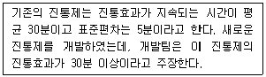
- H0:μ=30, H1:μ＞30
- H0:μ＜30, H1:μ=30
- H0:μ=30, H1:μ≠30
- H0:μ＞30, H1:μ=30
(정답률: 57%)
72. 일원배치법의 모형 Yij=μ+αi+εij에서 오차항 εij의 가정에 대한 설명으로 틀린 것은?
- 오차항 εij는 서로 독립이다.
- 오차항 εij의 기댓값은 0이다.
- 오차항 εij는 정규분포를 따른다.
- 오차항 εij의 분산은 동일하지 않아도 무방하다.
(정답률: 48%)
73. 사건의 독립성에 관한 설명으로 틀린 것은?
- 두 사건 A와 B가 독립이면, A와 BC또한 독립이다.
- 두 사건 A와 B가 독립이면, AC와 BC또한 독립이다.
- 세 사건 A, B, C가 상호 독립이면, A와 B∩C또한 독립이다.
- A와 B, A와 C,B와 C가 각각 독립이면, 세 사건 A, B, C가 상호 독립이다.
(정답률: 29%)
74. 오른쪽으로 꼬리가 긴 분포를 갖는 것은?
- 평균=40, 중위수=45, 최빈수=50
- 평균=40, 중위수=50, 최빈수=55
- 평균=50, 중위수=45, 최빈수=40
- 평균=50, 중위수=50, 최빈수=50
(정답률: 56%)
75. 지수의 필통에는 형광펜 4자루와 볼펜 3자루가 들어있고, 동환이의 필통에는 볼펜 4자루와 형광펜 3자루가 들어있다. 임의로 선택된 한 필통에서 펜을 한 자루 꺼낼 때 그 펜이 형광펜일 확률은?
- 1/5
- 1/4
- 1/3
- 1/2
(정답률: 55%)
76. 모표준편차가 σ인 모집단에서 크기가 10인 표본으로부터 표본평균을 구하여 모평균을 추정하였다. 표본평균의 표준오차를 반(1/2)으로 줄이려면, 추가로 표본을 얼마나 더 추출해야 하는가?
- 20
- 30
- 40
- 50
(정답률: 35%)
77. 회귀분석에서 관측값과 예측값의 차이는?
- 잔차(residual)
- 오차(error)
- 편차(deviation)
- 거리(distance)
(정답률: 47%)
78. 가설검정 시 유의확률(p값)과 유의수준(α)의 관계에 대한 설명으로 맞는 것은?
- 유의확률 ＜ 유의수준일 때 귀무가설을 기각한다.
- 유의확률 ≥ 유의수준일 때만 귀무가설을 기각한다.
- 유의확률 ≠ 유의수준일 때 귀무가설을 기각한다.
- 유의확률과 유의수준 중 어느 것이 큰가하는 문제와 가설검정과는 아무런 관계가 없다.
(정답률: 51%)
79. 어떤 연속확률변수 X의 평균이 0이고, 분산이 4이다. 체비셰프(Chebyshev) 부등식을 이용하여 P(-4≤X≤4)의 범위를 구하면?
- P(-4≤X≤4)≤0.5
- P(-4≤X≤4)≥0.75
- P(-4≤X≤4)≥0.95
- P(-4≤X≤4)≤0.99
(정답률: 29%)
80. X가 이항분포 B(n, p)를 따를 때, p의 불편추정량인
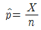
의 분산은?- np
- p(1-p)
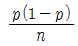
- np(1-p)
(정답률: 42%)
81. 두 변량 X와 Y의 관계를 분석하고자 한다. X와 Y가 모두 연속형 변수일 때 가장 적합한 분석은?
- 회귀 분석
- 분산 분석
- 교차 분석
- 베이즈 분석
(정답률: 44%)
82. 단순회귀분석에서 결정계수 r2에 대한 설명 중 틀린 것은?
- 추정회귀직선의 기울기가 0이면, r2=0이다.
- 결정계수가 취할 수 있는 범위는 0≤r2≤1이다.
- 모든 관찰점들이 추정회귀직선 상에 위치하면 r2=1이다.
- 결정계수는 설명변수와 반응변수 사이의 상관계수와는 관계가 없다.
(정답률: 44%)
83. 독립변수가 5개인 100개의 자료를 이용하여 절편이 있는 선형회귀모형을 추정할 때 잔차의 자유도는?
- 4
- 5
- 94
- 95
(정답률: 35%)
84. 행변수가 M개의 범주를 갖고 열변수가 N개의 범주를 갖는 분할표에서 행변수와 열변수가 서로 독립인지를 검정하고자 한다. (i, j)셀의 관측도수를 Oij, 귀무가설 하에서의 기대도수의 추정치를
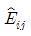
라 할 때, 이 검정을 위한 검정통계량은?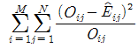
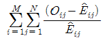
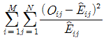
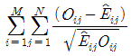
(정답률: 51%)
85. 어떤 회사에서 생산되는 제품이 부적합품일 확률은 서로 독립적으로 0.01이라 한다. 이 회사는 한 상자에 10개씩 포장해서 판매를 하는데 만일 한 상자에 부적합품이 2개 이상이면 돈을 환불해준다. 판매된 한 상자가 반품될 확률은 약 얼마인가?
- 0.1%
- 0.4%
- 9.1%
- 9.6%
(정답률: 35%)
86. “남녀간 월급여의 차이가 있다”라는 주장을 검정하기 위하여 사회조사를 실시하였다. 조사결과 남자집단의 월평균급여를 μ1, 여자집단의 월평균급여를 μ2라고 한다면, 귀무가설은?
- μ1=μ2
- μ1＜μ2
- μ1≠μ2
- μ1＞μ2
(정답률: 51%)
87. 다음 표는 성별과 혼인상태에 따른 교차표이다. 이 표에 대한 설명으로 틀린 것은?
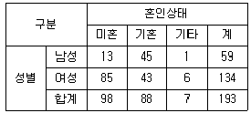
- 남성 가운데 미혼자의 비율은 22%이다.
- 기혼자 가운데 여성의 비율은 48.9이다.
- 전체에서 여성이 차지하는 비율은 69.4%이다.
- 전체에서 여성 기혼자가 차지하는 비율은 42.3이다.
(정답률: 60%)
88. 연속형 확률변수 X의 확률밀도함수가 다음과 같을 때 상수 k값과 P(|X|＞1)을 순서대로 구하면?
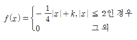
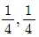
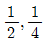
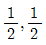
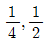
(정답률: 33%)
89. 일원배치 분산분석에 대한 설명으로 틀린 것은?
- 집단 간 평균을 비교하는 분석이다.
- 요인이 2개인 경우에 적용할 수 있다.
- 유의확률이 유의수준보다 크면 귀무가설을 기각할 수 없다.
- 검정통계량은 집단 내 제곱합과 집단 간 제곱합으로 구한다.
(정답률: 40%)
90. 모집단의 모수 θ에 대한 추정량(estimator)으로서 지녀야 할 성질 중 일치추정량에 대한 설명으로 가장 적합한 것은?
- 추정량의 평균이 θ가 되는 추정량을 의미한다.
- 여러 가지 추정량 중 분산이 가장 작은 추정량을 의미한다.
- 모집단으로부터 추출한 표본의 정보를 모두 사용한 추정량을 의미한다.
- 표본의 크기가 커질수록 추정량이 모수에 가까워지는 성질을 의미한다.
(정답률: 45%)
91. 확률변수 X와 Y는 서로 독립이며, X~N(1,12)이고, Y~N(2,22)이다. P(X+Y≥5)을 표준정규분포의 누적분포함수
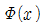
를 이용하여 나타내면?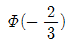
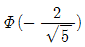
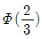
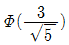
(정답률: 25%)
92. 어느 도시의 금연운동단체에서는 청소년들의 흡연율 p를 조사하기 위해 이 도시에 거주하는 청소년들 중 1200명을 임의로 추출하여 조사한 결과 96명이 흡연을 하고 있었다. 이 도시 청소년들의 흡연율 p의 추정값  와
와  의 95%오차한계는? (단, P(Z＞1.645)=0.⑤, P(Z＞1.96)=0.025, P(Z＞2.58)=0.0⑤이다.)
의 95%오차한계는? (단, P(Z＞1.645)=0.⑤, P(Z＞1.96)=0.025, P(Z＞2.58)=0.0⑤이다.)
 =0.06, 오차한계=0.013
=0.06, 오차한계=0.013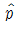
=0.08, 오차한계=0.013 =0.08, 오차한계=0.015
=0.08, 오차한계=0.015 =0.08, 오차한계=0.020
=0.08, 오차한계=0.020
(정답률: 35%)
93. 모 상관계수가 ρ인 이변량 정규분포를 따르는 두 변수에 대한 자료(xi, yi)(i=1, 2, …, n)에 대하여 표본상관계수
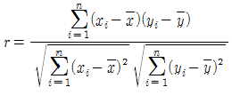
을 이용하여 귀무가설 H0:ρ=0을 검정하고자 한다. 이 때 사용되는 검정통계량과 그 자유도는?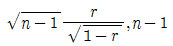
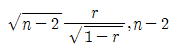
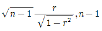
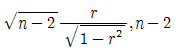
(정답률: 30%)
94. 다음 자료에 대한 설명으로 틀린 것은?
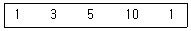
- 최빈값은 1이다.
- 평균은 4이다.
- 중위수는 5이다.
- 범위는 9이다.
(정답률: 62%)
95. 연속확률변수 X의 확률밀도함수가 다음과 같을 때 X의 기댓값은?
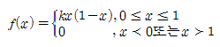
- 0.25
- 0.5
- 0.75
- 1
(정답률: 34%)
96. 상관계수의 범위에 관한 설명으로 맞는 것은?
- 상관계수의 범위는 0에서 1이다.
- 상관계수의 범위는 1에서 2이다.
- 상관계수의 범위는 –1에서 0이다.
- 상관계수의 범위는 –1에서 1이다.
(정답률: 55%)
97. 정규분포에 대한 설명으로 틀린 것은?
- 평균과 중위수가 동일하다.
- 평균을 중심으로 좌우대칭형의 분포를 이룬다.
- 확률밀도함수는 평균과 표준편차에 의해 결정된다.
- 평균을 중심으로 1σ(표준편차) 구간 내에 포함될 확률은 95%이다.
(정답률: 45%)
98. 두 개의 정규모집단으로부터 추출한 독립인 확률표본에 기초하여 모분산에 대한 가설 H0:σ12=σ22 vs H1:σ12＞σ22을 검정하고자 한다. 검정방법으로 맞는 것은?
- F-검정
- t-검정
- X2-검정
- z-검정
(정답률: 30%)
99. 다음 분산분석표에 대응하는 통계적 모형으로 적절한 것은?
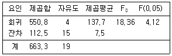
- 수준수가 4인 일원배치모형
- 독립변수가 4개인 중회귀모형
- 종속변수가 3개인 중회귀모형
- 종속변수가 1개인 단순회귀모형
(정답률: 39%)
100. 어느 화장품 회사에서 새로 개발한 상품에 대한 선호도를 조사하려고 한다. 400명의 조사 대상자 중 새 상품을 선호한 사람은 220명 이었다. 이 때 다음 가설에 대한 유의확률은? (단, Z~N(0,1)이다.)
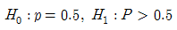
- P(Z≥1)
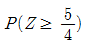
- P(Z≥2)
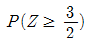
(정답률: 24%)